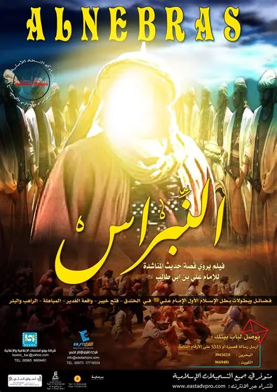

This is my favourite Movie. and the sound track is amazing.
The Tragedy of Karbala
The tragedy of Karbala is a story of courage, sacrifice, and unwavering faith. Imam Hussain (peace be upon him) and his family
faced immense hardship and oppression, standing for justice against tyranny. Despite being vastly outnumbered,
they remained steadfast, giving their lives so that truth and honor would prevail. Their sacrifice continues to inspire generations, reminding us of the cost of standing for what is right.